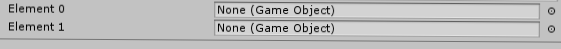

Welcome to Unity Basics
Examples
Here you are going to learn how to use Unity and create some basic stuff
You are going to learn how to declare gameObjects, floats and More!
Examples
The scripts need to be applied to the object
To create a script right click on the file inspector and click on "Create new C# Script"
All our variables need to be on under "CODE"
using UnityEngine;
System.Collections;
public class PlayerController : MonoBehaviour
{
// CODE
void
Start()
// Runs at the start of the game
{
}
void Update () // Each frame is executed
{
}
}
Declare a gameObject
public GameObject NameOfYourObject;
// Public can be access by all the scripts and the Unity Editor
private GameObject NameOfYourObject;
// Private can be access only by the script
[SerializedField] private GameObject NameOfYourObject;
// Private with SerializedField at the start can be access only by the script and the Unity Editor
Asing the object in the Inspector

Declare a float
public float NameOfYourFloat;
// Public can be access by all the scripts and the Unity Editor
private float NameOfYourFloat;
// Private can be access only by the script
[SerializedField] private float NameOfYourFloat;
// Private with SerializedField at the start can be access only by the script and the Unity Editor